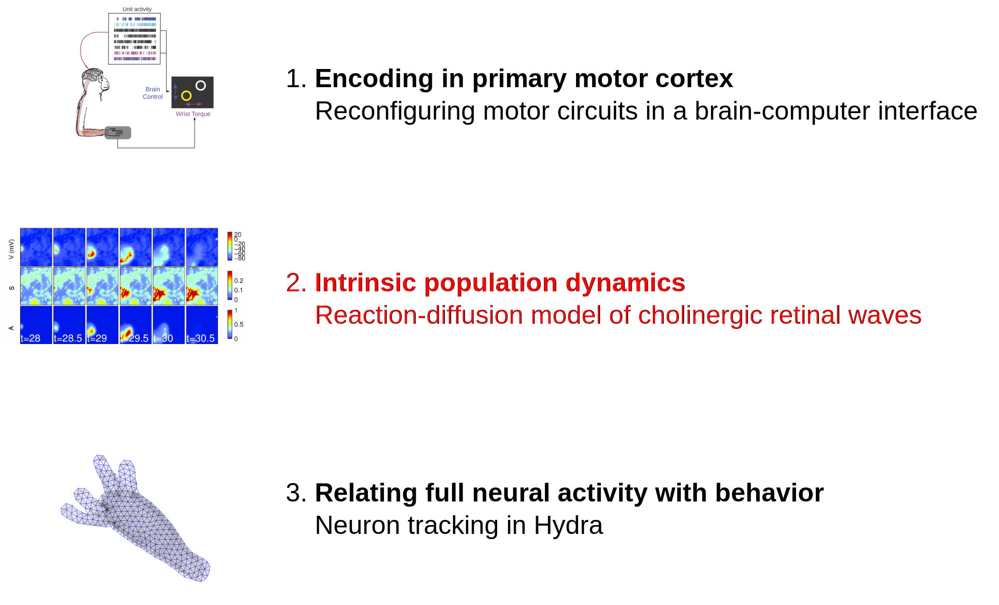

Neural encoding in application, development and beyond
Ben Lansdell
Applied Mathematics
Final examination, May 9th 2017
Neural activity represents the external world and motor behavior
Yuste 2015
Outline
Outline

Encoding models and motor cortex
Phillips and Porter 1977
- Motor cortical neuron representations are complex:
- kinetics — single-unit recordings, stimulation evoked responses (1960s)
- kinematics — center-out task (1980s)
- dynamics — high-dimensional recordings (2000s)
- Understanding motor encoding can inform design of BCIs for control of prosthetic limbs
Intracortical arrays provide state-of-the-art BCI control


- Monkeys can be trained to volitionally control individual neurons through feedback and conditioning [Fetz 1969]
- Neurons chosen independently of natural movement association [Moritz and Fetz 2011]
- Conversely, other studies report brain-control mappings which utilize activity observed during the natural motor repertoire are most effective [Sadtler et al 2014]
Dual-control BCIs


Milovanovic et al 2015
- Allow stroke patients to regain functionality through co-opting healthy motor cortex to control neural prosthetic in conjunction with residual movement
- Do neurons strongly associated with contralateral motion make poor control units due to the potential interference imposed by concurrent hand movement?
Dual-control BCIs

Milovanovic et al 2015
- Previous studies show performance independent of unit tuning [Milovanovic et al 2015]
What are the units of volitional control?
Activity of control and non-control units
- BCIs induce widespread changes in activity and tuning in variety of tasks and task perturbations [e.g. Carmena et al 2003]
- Some studies show control unit specific changes in tuning [e.g. Law et al 2014]
How do these effects manifest in a BCI paradigm where control units may be constrained by their role in ongoing movement?
Adrienne Fairhall

Chet Moritz

Cooper Mellema

Ivana Milovanovic
Experiment

- Utah multi-electrode array implanted in hand/wrist area of primary motor cortex of Macaque monkey
Random target pursuit task
- Target appears randomly outside radius from cursor position
- Acquire target within fixed time, hold for 1s

Changes in effective connectivity of population
For a fixed network of units, compute transfer entropy between units in each condition:
$$
H_{X\to Y} = I(Y_t|Y_{t-1}, \dots, Y_{t-T}) - I(Y_t|Y_{t-1}, \dots, Y_{t-T},X_{t-1}, \dots, X_{t-T})
$$
for Shannon entropy $I$.
Study differences in connectivity between brain-, dual- conditions and (baseline) manual condition.
Changes in effective connectivity of population

Lansdell et al (submitted)
Changes in effective connectivity of population
- Brain-control: overall decrease in effective connectivity to control units, regardless of co-tuning
- Dual-control: functional connectivity between co-tuned units does not change, except when control unit involved
Intrinsic variability predicts performance
Inspired by Sadtler et al 2014

Intrinsic variability predicts performance
- Gaussian process factor analysis (GPFA) used to identify low-dimensional subspace
- Identify when spaces are significantly non-orthogonal

Intrinsic variability predicts performance

- High performance requires at least one unit with high intrinsic variance
Summary
- Intrinsic variance of control units only variable found to predict performance and control unit contributions — motor unit tuning does not constrain how the task is performed
$\Rightarrow$ Provided basic neuronal constraints imposed by existing circuitry are taken into consideration, BCI design is able to leverage motor cortical adaptability.
$\Rightarrow$ Internal and latent dynamics reveal additional information, compared with direct encoding models
Outline
Spontaneous activity in retina drives developmental programs
- Insight into structure of nervous system through study of developmental processes
- Normal development of receptive fields in visual cortex relies on spontaneous activity in retina
- Active or permissive role?
Kevin Ford
Nathan Kutz
Ramón y Cajal
Retinal waves initiated and propagated by starburst amacrine cells (SACs)
Josh Morgan 2005 (http://wonglab.biostr.washington.edu/research.html)
Retinal waves initiated and propagated by starburst amacrine cells (SACs)
Ford et al 2012
Reaction-diffusion model of retinal waves
$$\begin{align*} C_{m}V_{t} & = -{\color{red}g_{Ca}(V-V_{Ca})}-{\color{green}g_{K}(R,S)(V-V_{K})}-{\color{red}g_{L}^{M}(V-V_{L})}-\\
& {\color{orange}g_{ACh}(V-V_{syn})}-{\color{blue}g_{n}^MN(V-V_{Ca})} \end{align*}$$
-
Morris Lecar dynamics: refractory variable $R$
-
Slow after-hyperpolarization (sAHP) current:
$$S_t = \gamma G(V) +S/\tau_S$$ -
Noise current initiates waves spontaneously: $N$ a Bernoulli RV
-
Diffusion/local coupling of ACh spreads waves:
$$\begin{align*} g_{ACh}(A) &= g_{ACh}^M\frac{\delta A^2}{1+\delta A^2} \\ A_t &= D\nabla^2 A + \beta G(V) -\frac{A}{\tau_{ACh}} \end{align*}$$
Amacrine cell network as an excitable medium
Lansdell, Ford and Kutz PLoS Comp Bio. 2014
Model produces realistic cholinergic retinal waves

When is the medium excitable?
- Non-dimensionalize, separate into fast-slow dynamics $$\begin{align*} v_t &= f(v,a;r)\\ a_t &= \nabla^2 a + \frac{k(v,a)}{\tilde{\tau}_{ACh}}\\ \end{align*} $$
- Shift to traveling frame at speed $c$: $x' = x - ct; t' = t$
- Heteroclinic orbit from rest to excited state is wave front $$\begin{align*} 0 &= f(v,a;r) + cv'\\ 0 &= ca' + a'' + \frac{k(v,a)}{\tilde{\tau}_{ACh}}\\ \end{align*} $$
When is the medium excitable?
- Non-dimensionalize, separate into fast-slow dynamics $$\begin{align*} v_t &= f(v,a;r)\\ a_t &= \nabla^2 a + \frac{k(v,a)}{\tilde{\tau}_{ACh}}\\ \end{align*} $$
- Shift to traveling frame at speed $c$: $x' = x - ct; t' = t$
- Heteroclinic orbit from rest to excited state is wave front $$\begin{align*} 0 &= f(v,a;r) + cv'\\ 0 &= ca' + a'' + \frac{k(v,a)}{\tilde{\tau}_{ACh}}\\ \end{align*} $$
Model predicts outcome of pharmacological manipulations
- Nicotinic ACh receptor agonists/antagonists affect conductance $g_{ACh}^M$
- Wave speed highly sensitive to $g_{ACh}^M$.
- Wave frequency affected
- Forskolin affects second messenger cAMP, affects sAHP
- Moderate change in wave frequency
- No change in wave speed

Analog to forest fire model exhibiting self-organized criticality
- Predicts when retinal waves exhibit power-law distributed wave sizes

- Model determines spatiotemporal properties of waves
- Can be used as a tool to investigate role of retinal waves in development
Outline
Comprehensive measures of neural activity in cnidaria — "cracking the neural code"
https://www.youtube.com/watch?v=dl_oVns2oa8
Why Hydra?
- Small (0.5mm-1.5cm) — can fit into field of view of traditional microscope
- Translucent; nerve net, easier imaging
- Does not age, and can regenerate
Hydra anatomy

Adapted from Technau and Steele 2011
Aims
Understand (and control) neuronal basis of simple behavior such as contracting/elongating and expelling fluid (egestion)
Sub-aims:
- Track Hydra pose
- Behavioral analysis
- Register and track neurons
- Record neural activity
Adrienne Fairhall

Rafael Yuste

Christophe Dupre
Experiment


C. Dupre, Yuste lab
Methods
- Create Act-GCaMP6s transgenic Hydra
- Mount between coverslips separated by .1mm spacer
- Image calcium transients
Whole-body calcium imaging in Hydra
C. Dupre, Yuste lab
Multi-frame optic flow image registration

Tracking with optic flow: performance
Comparison to hand annotated neuron tracks
Per frame:
- at least 52% neurons are tracked within 6px
- on average 82% neurons tracked within 6px
- 42% neurons tracked within 6 px throughout all video
Choosing which paths to associate
Measure image registration error

Exploiting periodicity in Hydra behavior
Stereotyped Hydra behavior:
elongate then contract
Compute and measure optic flow error, $f_{ij}(x)$, between frames with regular spacing
'interframes' — every 250 frames
 Frame index
Frame index
Exploiting periodicity in Hydra behavior
$\Rightarrow$ By registering regions of each interframe with a ref. frame we extend paths into temporally distant but positionally related frames
$\Rightarrow$ A mechanism to handle arbitrarily long videos without accumulation of tracking error


Segmenting regions to register with each reference frame
For $K$ reference frames and $L$ interframes, let $f_{ij}(x)$ represent the optic flow error in using reference image $i$ to construct image $j$.
Use total variation image segmentation:
$$\begin{align*}\min_{u_{kl}}\frac{1}{2}\sum_{k=1}^K\sum_{l=1}^L \int_\Omega |\nabla u_{kl}|\,dx
+ \frac{\lambda}{2}\sum_{k=1}^K\sum_{l=1}^L \int_{\Omega} u_{kl}(x)f_{kl}(x)\,dx\end{align*}
$$
Solve with primal-dual algorithm (Chambolle and Pock 2011), accelerated on GPU.
Want number of ref frames to balance global registration vs registration error
$\Rightarrow$ Add a group LASSO penalty for number of reference frames used:
$$\begin{align*}\min_{u_{kl}}\frac{1}{2}\sum_{k=1}^K\sum_{l=1}^L \int_\Omega |\nabla u_{kl}|\,dx
+ \frac{\lambda}{2}\sum_{k=1}^K\sum_{l=1}^L \int_{\Omega} u_{kl}(x)f_{kl}(x)\,dx+ \frac{\lambda_2}{2}\sum_{k=1}^K\left(\sum_{l=1}^L \|u_{kl}\|^2_2 \right)^{1/2}\end{align*}
$$
Method
1. Select very sparse set of reference frames (ref frames)
2. Select regular set of inter-frames


3. Use optic flow+image segmentation to label regions mapping to reference frames

Method
4. Within each interframe block run MFSF for dense registration

Method
5. Associate each path from (4) with point in a ref frame using optic flow+segmentation (3)

Thus every tracked path is associated with a point in a reference frame
Extending with $K=2; L = 8$
Summary
- Registration between similar frames — track Hydra pose throughout extended video sequences.
- Can be applied to other registration/tracking problems
— Sydney Brenner
Acknowledgments
- Adrienne Fairhall
- Chet Moritz
- Eric Shea-Brown
- Emily Fox
- Ivana Milovanovic
- Cooper Mellema
- Eberhard Fetz
- Fairhall lab (UW)
- Anatoly Buchin
- Moritz lab (UW)
- Charlie Matlack
- Robert Robinson
- Yuste lab (Columbia)
- Rafael Yuste
- Thibault Lagache
- Christophe Dupre
- John Szymanski
Segmenting regions to extend

Segmenting regions to extend
$$\begin{align*}\min_{u_l}\frac{1}{2}\sum_{l=1}^k \int_\Omega |\nabla u_l|\,dx
+ \frac{\lambda}{2}\sum_{l=1}^k \int_{\Omega} u_l(x)f_l(x)\,dx\end{align*}
$$
with $f_l(x) = |g(x)-c_l|^2$. Assume $c_l$ are known and $\mathbf{u}\in U$:
$$
U = \left\{u_l:\sum_l^k u_l(x) = 1, \quad u_l(x) \ge 0, \forall x\in\Omega\right\}
$$
Convex in $\mathbf{u}$
Select color via $v(x) = \text{argmax}_l u_l(x)$
Mumford-Shah image segmentation
Chambolle algorithm solves problems:
$$\min_{x\in X}F(Kx) + G(x)$$
for convex $F(\cdot):Y\to [0,\infty]$ and $G(\cdot):X\to [0,\infty]$,
in primal-dual form:
$$\min_{x\in X}\max_{y\in Y} \langle Kx, y\rangle - F^*(y) + G(x)$$
Algorithm:
- Initialization: $\tau, \sigma > 0, \theta \in [0,1], (x^0,y^0)\in X\times Y$. Set $\bar{x}^0 = x^0$
- Iterate until convergence: ($n\ge 0$) $$\begin{align} y^{n+1} &= \pi_{F^*}(y^n + \sigma K \bar{x}^n; \sigma)\\ x^{n+1} &= \pi_G(x^n - \tau K^* {y}^{n+1}; \tau)\\ \bar{x}^{n+1} &= x^{n+1} +\theta(x^{n+1} - x^n) \end{align}$$
Mumford-Shah image segmentation
With proximal operator
$$
\pi_G(y;\tau) = \text{argmin}_{x}\frac{\|x-y\|_2^2}{2\tau}+G(x)
$$
Primal-dual MS image segmentation:
$$\begin{align}\min_{u=(u_l)_{l=1}^k} \max_{p=(p_l)_{l=1}^k} &\left(\sum_{l=1}^k\langle \nabla u_l, p_l \rangle +\langle u_l, f_l \rangle \right) +\delta_U(u) - \delta_P(p) \end{align}$$
So,
- $K = \nabla$ (first order forward difference)
- $K^* = -\text{div}$ (first order backward difference)
- $F^*(p) = \delta_P(p)$ with $P=\left\{ p\in Y^k:\|p_l\|_\infty \le \frac{1}{2}\right\}$
- $G(u) = \delta_U(u)$
Segmentation of tracked regions
For $K$ reference frames and $L$ iframes, let $f_{ij}(x)$ represent the optic flow error in using reference image $i$ to construct image $j$. $$\begin{align}\min_{u} \max_{p} \sum_{l=1}^L\left(\sum_{k=1}^K\langle \nabla u_{kl}, p_{kl} \rangle +\langle u_{kl}, f_{kl} \rangle \right) +\delta_U(u) - \delta_P(p) \end{align}$$
Choosing ref frames
Want number of ref frames to balance global registration vs registration error
Add a group LASSO penalty for number of reference frames used:
$$\begin{align}\min_{u=(u_l)_{l=1}^k} \max_{p=(p_l)_{l=1}^k} &\left(\sum_{l=1}^k\langle \nabla u_l, p_l \rangle +\langle u_l, f_l \rangle \right) +\delta_U(u) - \delta_P(p) +\frac{\lambda_2}{2}\sum_{k=1}^K\left(\sum_{l=1}^L \|u_{kl}\|^2_2 \right)^{1/2} \end{align}$$
The proximal operator $\pi_G$ now becomes:
$$
\pi_G(y;\tau) = \text{argmin}_{x}\frac{\|x-y\|_2^2}{2\tau}+\frac{\lambda_2}{2}\sum_{k=1}^K\left(\sum_{l=1}^L \|y_{kl}\|^2_2 \right)^{1/2}+\delta_U(y)
$$
Compute $\pi_G$ with ADMM
Multi-frame optic flow image registration
- Dense optic flow with subspace constraints (MFSF, Garg et al 2013)
- For each pixel find linear combination of basis paths, $L$, that minimize energy

- $I_f$ = image at frame $f$,
- $I_0$ = reference frame (need not be first frame of video),
- $Q_f^u$, $Q_f^v$ = basis paths at frame $f$,
- $\alpha$ = smoothness regularizer